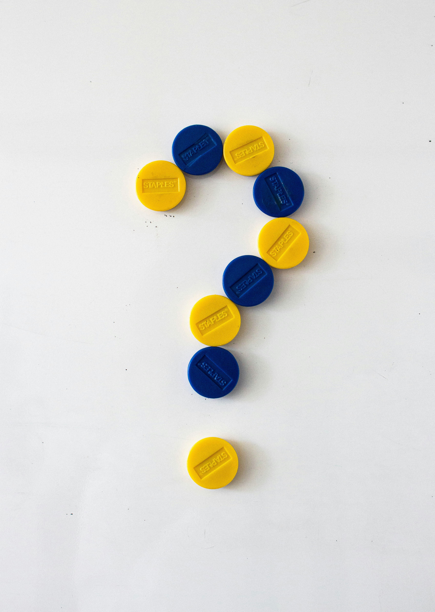
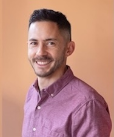
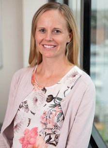
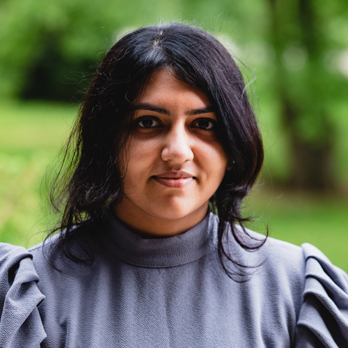
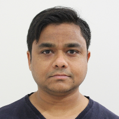

Photo by Photoholgic on Unsplash
The purpose of AIMOS is to make the research process more trustworthy and efficient, and to promote the study of how research is done and how it can be improved. Our annual conference is an important collaborative space that advances this purpose.
AIMOS2025 will bring together researchers from multiple scientific disciplines to talk about how research is done and how we can do it better.
To be confirmed.
|  | ||
| TBC 1 | TBC 2 | TBC 3 |
| Plenary speaker 1 bio. | Plenary speaker 2 bio (weblink). | Plenary speaker 3 bio. |
|  |
|
 |
|
 |  |
| Jason Chin | Adrian | Kylie | Aidan Tan | Tatiana | Samiul |
| Barnett | Hunter | Chakravorti | Hossain |
|
|
Sign up here to the AIMOS mailing list to get updates on the conference and other meta-research events.
Got a question about the conference? Email Jason at: Jason.Chin@anu.edu.au.
Want to know more about AIMOS? Here's our web page.